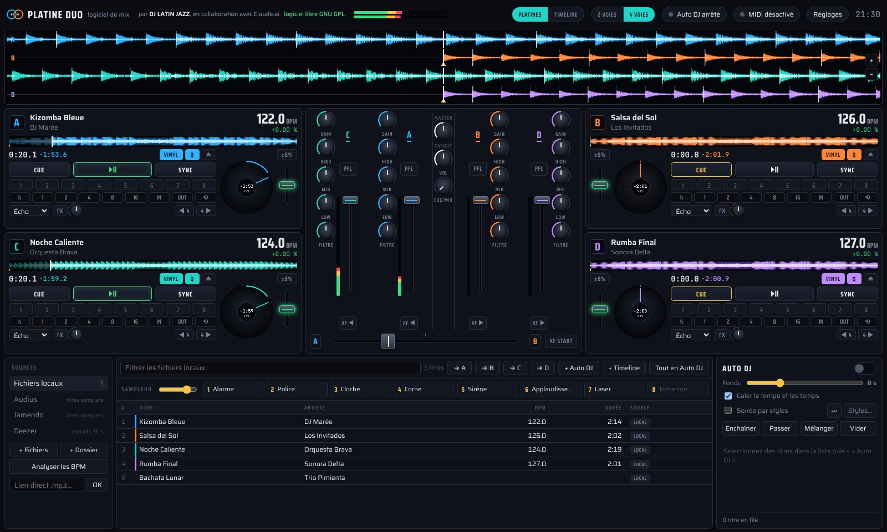
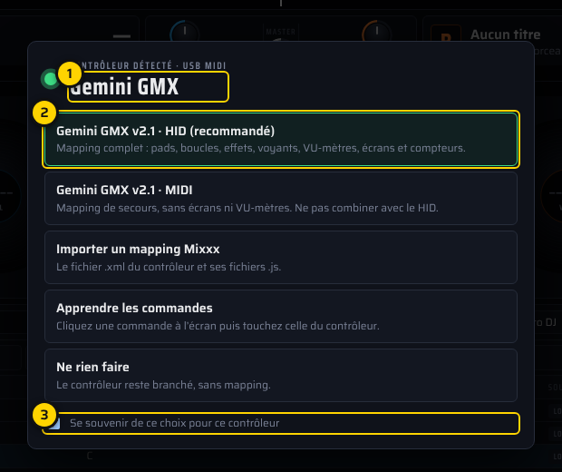

Windows
Windows 10 · 11 (64 bits)
Platine-Duo-4V-Setup-2.0.0.3.exe
Double-cliquez sur l'installateur. S'il indique « Windows a protégé votre ordinateur » : Informations complémentaires › Exécuter quand même.
Télécharger .exeLe logiciel de mix DJ libre et gratuit : 2 ou 4 platines, Auto DJ par styles de danse, sampleur et contrôleurs MIDI.
Créé par DJ LATIN JAZZ (Jacques Branas), en collaboration avec Claude.ai

Mode 4 platines : A, B, C et D, chacune avec sa couleur.
Pensé par un DJ pour les soirées dansantes, simple à prendre en main et complet quand on en a besoin.
Formes d'onde, BPM, SYNC, 8 repères, boucles, effets écho, flanger et réverb. Un bouton passe de 2 à 4 voies.
Gain, égaliseur 3 bandes, filtre, casque, crossfader avec XF START : pousser le crossfader lance la platine.
L'Auto DJ enchaîne 3 salsas, 3 bachatas, 3 kizombas… à partir de vos dossiers. Idéal pour les soirées SBK, semba ou tango.
Alarme, police, cloche, corne, sirène, applaudissements, laser… et votre propre son sur le pad 8.
MIDI, USB HID et Bluetooth MIDI, reconnus au branchement. Les mappings Mixxx s'importent tels quels.
Français, English, español, Deutsch, italiano, português. Code source ouvert sous licence GNU GPL.
Gratuit, sans inscription. Le bon fichier pour votre ordinateur est mis en avant.
Windows 10 · 11 (64 bits)
Double-cliquez sur l'installateur. S'il indique « Windows a protégé votre ordinateur » : Informations complémentaires › Exécuter quand même.
Télécharger .exePuces M1, M2, M3, M4 · macOS 12 ou plus
Ouvrez le .zip et glissez l'application dans Applications. Premier lancement : Réglages Système › Confidentialité et sécurité › Ouvrir quand même.
Télécharger .zipProcesseur Intel · macOS 12 ou plus
Pour savoir quel Mac vous avez : menu Pomme › À propos de ce Mac (« Puce » ou « Processeur Intel »).
Télécharger .zipUbuntu · Debian · Mint (64 bits)
Double-clic pour l'installer, ou dans un terminal : sudo apt install ./platine-duo_2.0.0_amd64.3.deb
Télécharger .debToutes les distributions (64 bits)
Rendez le fichier exécutable (clic droit › Propriétés, ou chmod +x), puis double-clic. Aucune installation.
Télécharger .AppImageChrome · Edge · Opera
Un seul fichier, sans installation : ouvrez-le dans Chrome, Edge ou Opera sur ordinateur. Ou essayez-le directement en ligne.
Télécharger .htmlAvant de lancer Platine Duo, fermez Mixxx : un contrôleur ne sert qu'à un logiciel à la fois.
Toutes les versions · Ancienne version 1.1.0 (Windows) · Code source · Signaler un bug
Si le logiciel anime vos soirées, un petit don aide à le faire vivre. Objectif en cours : un Reloop Terminal Mix 8, pour intégrer son mapping et tester le mode 4 platines sur un vrai contrôleur.
Dons sur Ko-fi : montant libre, par carte bancaire ou PayPal, sans créer de compte.Au branchement, Platine Duo reconnaît le contrôleur et propose le bon mapping. Pour les autres, le mode apprentissage relie chaque bouton en deux clics.

Chaque écran expliqué avec des repères numérotés : platines, table de mixage, Auto DJ, soirée par styles, sampleur, contrôleurs.